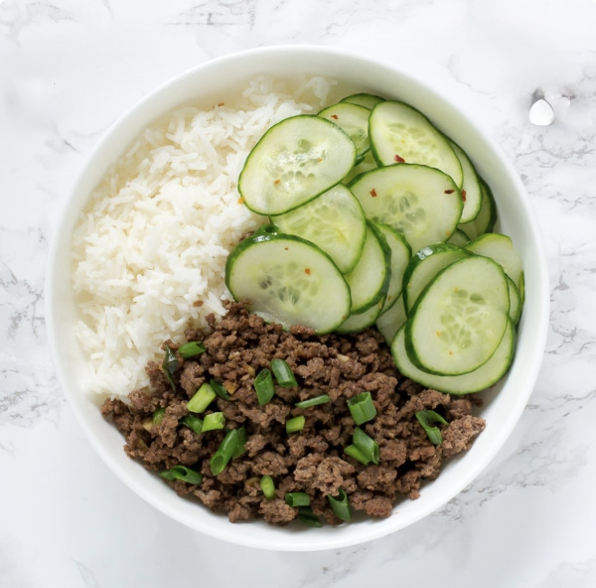

Ingredients
- ¼ cup brown sugar, packed
- ¼ cup reduced sodium soy sauce
- 2 teaspoons sesame oil
- ½ teaspoon crushed red-pepper flakes, or more to taste
- ¼ teaspoon ground ginger
- 1 tablespoon vegetable oil
- 3 cloves garlic, minced
- 1 pound ground beef
- 2 green onions, thinly sliced
- ¼ teaspoon sesame seeds
Instructions
- In a small bowl, whisk together brown sugar, soy sauce, sesame oil, red pepper flakes and ginger.
- Heat vegetable oil in a large cast iron skillet over medium high heat. Add garlic and cook, stirring constantly, until fragrant, about 1 minute. Add ground beef and cook until browned, about 3-5 minutes, making sure to crumble the beef as it cooks; drain excess fat.
- Stir in soy sauce mixture and green onions until well combined, allowing to simmer until heated through, about 2 minutes.
- Serve immediately, garnished with green onion and sesame seeds, if desired.